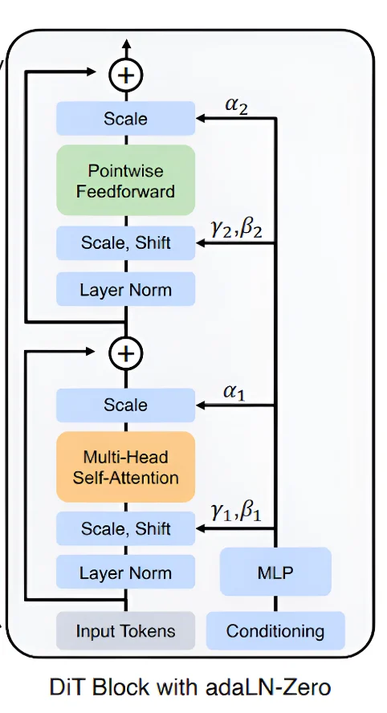
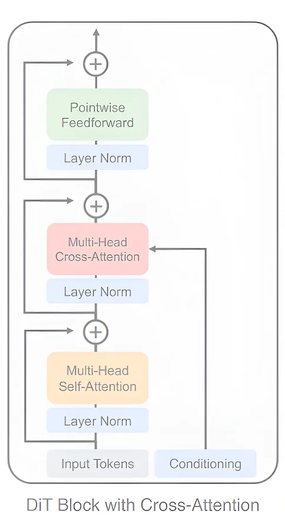
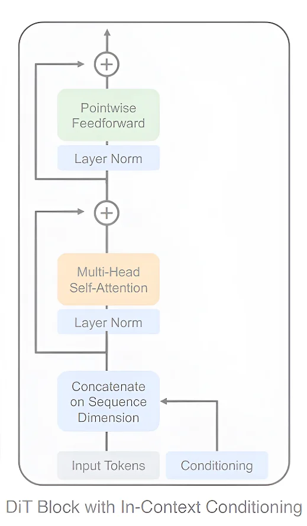

[AIMS] Artificial Intelligence through Multimodal Signal Processing
Diffusion Transformers
Introdução aos DiTs: modelos de difusão que trocam a U-Net por um Transformer
Inspirado no artigo Scalable Diffusion Models with Transformers · William Peebles, Saining Xie
ICCV 2023, pp. 4195–4205 · UC Berkeley · New York University · Meta AI (FAIR)
ApresentaçãoJohsac Isbac Gomez Sanchez
Grupo de Estudos Camaleão
→ / espaço: avançar · ← voltar · F: tela cheia
Roteiro
Problemas em aberto — o que falta nos modelos generativos
Revisão da literatura — U-Net, difusão, Transformer, ViT, LDM
Motivação e impacto dos DiTs — o artigo, os autores, a proposta
Arquitetura do modelo — patches, blocos DiT, tamanhos
Resultados obtidos — FID, Gflops e escalabilidade
Extensão para outras áreas — 3D, fala e gestos
Conclusões — e limitações
Trabalhos futuros
Dificuldades encontradas — na pesquisa
Geração de vídeo: Sora (OpenAI) × Runway. O Sora é construído sobre Diffusion Transformers.
Problemas em aberto
1Problemas em aberto em modelos de geração
ArquiteturasReduzir a dependência de arquiteturas consolidadas
Novas áreasCriar novas oportunidades para descobertas em diferentes áreas: texto, imagem e sinais
EficiênciaOferecer uma abordagem mais eficiente em termos computacionais
Barreiras entre áreasSuperar barreiras de descobertas cruzadas entre áreas como texto, imagem e sinais
Seção 2 de 9
Roteiro
Problemas em aberto — o que falta nos modelos generativos
Revisão da literatura — U-Net, difusão, Transformer, ViT, LDM
Motivação e impacto dos DiTs — o artigo, os autores, a proposta
Arquitetura do modelo — patches, blocos DiT, tamanhos
Resultados obtidos — FID, Gflops e escalabilidade
Extensão para outras áreas — 3D, fala e gestos
Conclusões — e limitações
Trabalhos futuros
Dificuldades encontradas — na pesquisa
Revisão da literatura · U-Net
2U-Net: segmentação de imagens
U-Net (2015) é uma rede convolucional com estrutura em “U”, usada para segmentação de imagens, com um encoder e um decoder simétricos conectados por saltos (skip connections).
Braço de codificação, braço de decodificação e conexões de saltoExemplo de segmentação
Vide O. Ronneberger, P. Fischer, T. Brox. U-Net: Convolutional Networks for Biomedical Image Segmentation. MICCAI 2015.
Revisão da literatura · U-Net
2U-Net: encoder e decoder
EncoderComprime a informação da imagem, extraindo características abstratas.
DecoderExpande essas características, restaurando a resolução para segmentação ou geração.
Vide O. Ronneberger, P. Fischer, T. Brox. U-Net: Convolutional Networks for Biomedical Image Segmentation. MICCAI 2015.
Revisão da literatura · Difusão
2Geração de imagens com modelos de difusão
Modelo de difusão (2020): modelo generativo que adiciona ruído progressivamente às imagens e usa uma U-Net para aprender a reverter o ruído, passo a passo.
Forward diffusionDo input x₀ ao ruído puro x_T: adiciona ruído gaussiano em cada passo.
Reverse diffusionDo ruído x_T ao output x₀: a U-Net prevê e remove o ruído em cada passo.
Vide J. Ho, A. Jain, P. Abbeel. Denoising Diffusion Probabilistic Models. NeurIPS 2020.
Revisão da literatura · Difusão
2Gerando uma amostra por remoção de ruído
Reverse diffusion
Reverse diffusionA geração começa no ruído e o reverte passo a passo, guiada pela U-Net e pelo timestep.
Timestep tIndica quanto ruído remover em cada passo: informa quanto ruído está presente na imagem naquele momento.
Vide J. Ho, A. Jain, P. Abbeel. Denoising Diffusion Probabilistic Models. NeurIPS 2020.
Revisão da literatura · Transformer
2Transformer em Processamento de Linguagem Natural
Transformer (2017) revolucionou o NLP ao processar longas sequências de texto com autoatenção, eliminando a necessidade de redes recorrentes.
Por exemplo, o input: “Eu sou estudante”
O positional encoding introduz a ordem dos tokens na sequência, permitindo capturar relações posicionais entre eles.
Vide A. Vaswani et al. Attention Is All You Need. NeurIPS 2017.
Revisão da literatura · Transformer
2RNNs × mecanismo de autoatenção
RNNs: um token de cada vezAutoatenção: todos os tokens ao mesmo tempo
O mecanismo de atenção supera limitações como:
Processa as sequências simultaneamente
Captura relações distantes
Paralelismo
Interações complexas
Vide A. Vaswani et al. Attention Is All You Need. NeurIPS 2017.
Revisão da literatura · Transformer
2Encoder e decoder: aplicações
Encoder (esquerda) · Decoder (direita)
EncoderClassificação (ex.: BERT), segmentação de imagens, detecção de objetos, análise de sentimentos, DiTs, entre outras.
DecoderTradução automática, geração de texto (ex.: GPT), resumo automático e modelos de texto para imagem (ex.: DALL·E).
Revisão da literatura · ViT
2Transformers em visão computacional (ViT)
ViTs (2020) aplicam Transformers às imagens: dividem a imagem em fragmentos (patches), processam cada um como um token e usam atenção para capturar relações espaciais de longo alcance.
Vide A. Dosovitskiy et al. An Image is Worth 16x16 Words: Transformers for Image Recognition at Scale. ICLR 2021.
Revisão da literatura · LDM
2Modelos de difusão latente (LDM)
LDM (2022) treinam a difusão num espaço latente comprimido, em vez do espaço de pixels, e introduzem um mecanismo de condicionamento para controlar a geração com informações adicionais.
Vide R. Rombach et al. High-Resolution Image Synthesis with Latent Diffusion Models. CVPR 2022.
Revisão da literatura · LDM
2Gerando uma amostra com condicionamento
Com o condicionamento, o modelo gera imagens a partir de entradas adicionais específicas, usando técnicas de amostragem como o Classifier-Free Diffusion Guidance.
Para permitir o condicionamento, a U-Net usa atenção cruzada (cross-attention) durante o denoising.
Vide J. Ho, T. Salimans. Classifier-Free Diffusion Guidance. 2021.
Perguntas em aberto
2Tudo foi resolvido com modelos de difusão?
FlexibilidadeAté que ponto os modelos de difusão são flexíveis o suficiente para se adaptar a diferentes áreas e tarefas?
EscalabilidadeA eficiência computacional dos modelos de difusão propostos é adequada para uma escalabilidade real?
Seção 3 de 9
Roteiro
Problemas em aberto — o que falta nos modelos generativos
Revisão da literatura — U-Net, difusão, Transformer, ViT, LDM
Motivação e impacto dos DiTs — o artigo, os autores, a proposta
Arquitetura do modelo — patches, blocos DiT, tamanhos
Resultados obtidos — FID, Gflops e escalabilidade
Extensão para outras áreas — 3D, fala e gestos
Conclusões — e limitações
Trabalhos futuros
Dificuldades encontradas — na pesquisa
Motivação e impacto
3O artigo e seu impacto
Publicado em
Proceedings of the IEEE/CVF International Conference on Computer Vision (ICCV), 2023, pp. 4195–4205
Qualis CAPES
A1 (nota máxima)
Citações
800 (até 26/09/2024)
Organização
Meta AI, equipe FAIR
Motivação e impacto
3Os autores
Perfis do Google Scholar no momento da preparação da apresentação (setembro de 2024).
Motivação e impacto
3Principais motivações dos DiTs
U-NetDependência da arquitetura U-Net nos modelos de difusão
TransformersO sucesso dos Transformers em outras áreas: texto, imagem e sinais
EficiênciaBuscar modelos de difusão mais eficientes computacionalmente
EscalabilidadeFalta de escalabilidade nos modelos de difusão baseados em U-Net
Motivação e impacto
3Proposta do artigo
1 · Nova classe de modelosModelos de difusão baseados em Transformers, substituindo a arquitetura U-Net.
2 · EscalabilidadeMostrar que a qualidade das imagens melhora quando o modelo cresce: Transformer mais profundo/largo ou mais tokens de entrada.
Seção 4 de 9
Roteiro
Problemas em aberto — o que falta nos modelos generativos
Revisão da literatura — U-Net, difusão, Transformer, ViT, LDM
Motivação e impacto dos DiTs — o artigo, os autores, a proposta
Arquitetura do modelo — patches, blocos DiT, tamanhos
Resultados obtidos — FID, Gflops e escalabilidade
Extensão para outras áreas — 3D, fala e gestos
Conclusões — e limitações
Trabalhos futuros
Dificuldades encontradas — na pesquisa
Arquitetura do modelo
4A ideia: trocar a U-Net por um Transformer
Diffusion Transformers (DiTs, 2023) substituem a U-Net dos modelos de difusão dentro do espaço latente.
U-NetTransformer
Vide W. Peebles, S. Xie. Scalable Diffusion Models with Transformers. ICCV 2023.
Arquitetura do modelo
4Arquitetura interna dos DiTs
Substituição da U-Net pelo Transformer: o ruído latente é fragmentado, recebe positional encoding e passa por N blocos DiT, condicionados pelo timestep e pelo rótulo.
Vide W. Peebles, S. Xie. Scalable Diffusion Models with Transformers. ICCV 2023.
Arquitetura do modelo
4Fragmentação da imagem: o bloco “fragment or patch”
→
Patch + positional embedding
Patches menores (p menor) → mais tokens: T = (I/p)². Mais tokens = mais custo, mas também mais detalhe.
Arquitetura do modelo
4Três variantes do bloco DiT
Os autores propõem três variantes: 1) adaLN-Zero, 2) Cross-Attention e 3) In-Context Conditioning, para abordar diferentes aspectos da geração de imagens.
Vide W. Peebles, S. Xie. Scalable Diffusion Models with Transformers. ICCV 2023.
Arquitetura do modelo · bloco 1
4Bloco DiT: adaLN-Zero

Adapta dinamicamente a informação condicional e modifica diretamente a camada normalizada da entrada por meio de parâmetros.
Conditioning: recebe informação adicional (timestep, rótulos) que influencia a geração.
MLP: processa o condicionamento e gera os parâmetros γ, α (escala) e β (deslocamento, shift).
γ e β: após a normalização, ajustam os tokens normalizados às condições específicas.
adaLN = Adaptive Layer Normalization. “Zero”: os α começam em zero, e cada bloco começa como a identidade.
Arquitetura do modelo · bloco 2
4Bloco DiT: Cross-Attention

O modelo presta atenção não só aos próprios tokens (autoatenção), mas também à informação de condicionamento (atenção cruzada).
Input Tokens e Conditioning: os tokens entram junto com a informação condicional.
Self-Attention: atenção entre os tokens, capturando relações internas.
Cross-Attention: os tokens prestam atenção à informação condicional externa (texto, rótulos etc.).
Feedforward: cada token é transformado de forma independente para melhorar sua representação.
Arquitetura do modelo · bloco 3
4Bloco DiT: In-Context Conditioning

Mecanismo eficiente: concatena a informação condicional diretamente aos tokens, sem processamento adicional custoso.
Input Tokens e Conditioning: os tokens de entrada são concatenados com a informação condicional na dimensão da sequência.
Self-Attention: atenção sobre os tokens concatenados, capturando relações entre tokens e condições.
Feedforward: cada token é transformado individualmente.
Arquitetura do modelo
4Tamanhos dos DiTs
Os autores propõem 4 tamanhos: Small (S), Base (B), Large (L) e XLarge (XL).
Modelo
Camadas N
Dimensão oculta d
Cabeças de atenção
Gflops (I = 32, p = 4)
DiT-S
12
384
6
1.4
DiT-B
12
768
12
5.6
DiT-L
24
1024
16
19.7
DiT-XL
28
1152
16
29.1
Cada tamanho varia em: 1) número de camadas do Transformer, 2) dimensionalidade dos tokens, 3) número de cabeças de atenção e 4) Gflops: bilhões de operações de ponto flutuante por passada (forward pass) da rede.
Fonte Tabela 1 de W. Peebles, S. Xie. Scalable Diffusion Models with Transformers. ICCV 2023.
Seção 5 de 9
Roteiro
Problemas em aberto — o que falta nos modelos generativos
Revisão da literatura — U-Net, difusão, Transformer, ViT, LDM
Motivação e impacto dos DiTs — o artigo, os autores, a proposta
Arquitetura do modelo — patches, blocos DiT, tamanhos
Resultados obtidos — FID, Gflops e escalabilidade
Extensão para outras áreas — 3D, fala e gestos
Conclusões — e limitações
Trabalhos futuros
Dificuldades encontradas — na pesquisa
Resultados obtidos
5Avaliação: FID × Gflops
Os Gflops do Transformer estão fortemente correlacionados com o FID (correlação −0,93).
Mede a qualidade das imagens geradas comparando a distribuição estatística das imagens reais (r) e geradas (g): médias μ e covariâncias Σ. Quanto menor, melhor.
S/8, S/4, S/2… A letra é o tamanho do modelo; o número depois da barra é o tamanho do fragmento p. Patch menor → mais tokens → mais Gflops → FID menor.
Fonte Figura 1 de W. Peebles, S. Xie. Scalable Diffusion Models with Transformers. ICCV 2023.
Resultados obtidos
5Resultados da escalabilidade dos DiTs
Aumentando o tamanho do Transformer →
Diminuindo o tamanho dos fragmentos →
Resultados obtidos
5Conclusões do artigo
Os Transformers podem substituir efetivamente a U-Net em modelos de difusão.
Os DiTs se adaptam bem ao aumento da complexidade do Transformer e à tokenização em fragmentos menores, melhorando os resultados.
Os autores propõem que os DiTs se tornem a arquitetura padrão para trabalhos futuros em modelos de difusão.
Seção 6 de 9
Roteiro
Problemas em aberto — o que falta nos modelos generativos
Revisão da literatura — U-Net, difusão, Transformer, ViT, LDM
Motivação e impacto dos DiTs — o artigo, os autores, a proposta
Arquitetura do modelo — patches, blocos DiT, tamanhos
Resultados obtidos — FID, Gflops e escalabilidade
Extensão para outras áreas — 3D, fala e gestos
Conclusões — e limitações
Trabalhos futuros
Dificuldades encontradas — na pesquisa
Extensão para outras áreas
6Perguntas filosóficas
Outras áreasPodemos aplicar os DiTs a outras áreas, como áudio, vídeo e gestos?
ModificaçõesQue modificações ou extensões à arquitetura DiT seriam necessárias para alcançar desempenho comparável ou superior aos métodos existentes nessas áreas?
CondicionamentoQual seria o papel do condicionamento na geração de áudio ou gestos, onde as condições mudam ao longo do tempo? Ex.: tom, estilo, prosódia e ritmo no áudio; postura, expressões e movimentos nos gestos.
Extensão para outras áreas · 3D
6DiT-3D: geração de formas 3D
DiT-3D (2023) aplica os DiTs à geração de formas 3D, usando nuvens de pontos voxelizadas para produzir geometrias detalhadas, com Transformers no lugar da U-Net.
Vide S. Mo et al. DiT-3D: Exploring Plain Diffusion Transformers for 3D Shape Generation. NeurIPS 2023.
Extensão para outras áreas · 3D
6Resultados do DiT-3D
Exemplos de nuvens de pontos 3D diversas produzidas pelo DiT-3D.
Vide S. Mo et al. DiT-3D: Exploring Plain Diffusion Transformers for 3D Shape Generation. NeurIPS 2023.
Extensão para outras áreas
E os DiTs para gestos corporais, como seriam?
Extensão para outras áreas · gestos
6Gestos corporais: o corpo fala através dos gestos!
O que são gestos corporais?São conjuntos de gestos, expressões faciais, olhares, posturas e outros movimentos, conscientes ou não, sutis ou explícitos, que transmitem informações relevantes num diálogo sem palavras.
Figura obtida em: pnliafi/comunicacion-no-verbal
Extensão para outras áreas · fala e gestos
6DiT para gestos guiados pela fala
DiT Gesture Synthesis (2024) gera gestos personalizados a partir da fala, usando inferência automática de características fuzzy para sincronizar os movimentos do corpo com o áudio em tempo real.
Vide F. Zhang et al. Speech-Driven Personalized Gesture Synthetics: Harnessing Automatic Fuzzy Feature Inference. 2024.
Extensão para outras áreas · fala e gestos
6Arquitetura do Persona-Gestor
Vide F. Zhang et al. Speech-Driven Personalized Gesture Synthetics: Harnessing Automatic Fuzzy Feature Inference. 2024.
Seção 7 de 9
Roteiro
Problemas em aberto — o que falta nos modelos generativos
Revisão da literatura — U-Net, difusão, Transformer, ViT, LDM
Motivação e impacto dos DiTs — o artigo, os autores, a proposta
Arquitetura do modelo — patches, blocos DiT, tamanhos
Resultados obtidos — FID, Gflops e escalabilidade
Extensão para outras áreas — 3D, fala e gestos
Conclusões — e limitações
Trabalhos futuros
Dificuldades encontradas — na pesquisa
Conclusões
7Limitações
Foco em imagensA maioria das pesquisas com DiTs se concentra na geração de imagens e não se aprofunda em áudio, vídeo e gestos.
ReprodutibilidadeNão foram encontrados trabalhos públicos (GitHub) reproduzíveis, ao menos para áudio e gestos.
TokensA qualidade dos resultados depende em grande parte da escalabilidade dos tokens.
CustoApesar das melhorias na escalabilidade, os DiTs ainda têm um alto custo computacional.
Conclusões
7Conclusões
Arquitetura padrãoOs DiTs podem se tornar a arquitetura padrão em modelos de difusão, pela adaptabilidade e pelo desempenho em áreas multimodais.
Fala e gestoTêm potencial para capturar relações complexas entre fala e gesto, com grande flexibilidade para dinâmicas complexas.
OportunidadeHá espaço para pesquisa de mestrado e doutorado: ainda existem poucos trabalhos desenvolvidos.
Seção 8 de 9
Roteiro
Problemas em aberto — o que falta nos modelos generativos
Revisão da literatura — U-Net, difusão, Transformer, ViT, LDM
Motivação e impacto dos DiTs — o artigo, os autores, a proposta
Arquitetura do modelo — patches, blocos DiT, tamanhos
Resultados obtidos — FID, Gflops e escalabilidade
Extensão para outras áreas — 3D, fala e gestos
Conclusões — e limitações
Trabalhos futuros
Dificuldades encontradas — na pesquisa
Trabalhos futuros
8Trabalhos futuros
Tempo realMelhorar os tempos de processamento de dados sequenciais e multimodais, como áudio e gestos, para geração em tempo real.
EficiênciaDesenvolver versões mais eficientes de DiTs que reduzam o custo computacional, especialmente em aplicações de grande escala.
Novas abordagensIntegrar, por exemplo, MoEs (Mixture of Experts) para tarefas específicas ou agentes autônomos para controlar a dinâmica: uma solução mais flexível e adaptável.
Seção 9 de 9
Roteiro
Problemas em aberto — o que falta nos modelos generativos
Revisão da literatura — U-Net, difusão, Transformer, ViT, LDM
Motivação e impacto dos DiTs — o artigo, os autores, a proposta
Arquitetura do modelo — patches, blocos DiT, tamanhos
Resultados obtidos — FID, Gflops e escalabilidade
Extensão para outras áreas — 3D, fala e gestos
Conclusões — e limitações
Trabalhos futuros
Dificuldades encontradas — na pesquisa
Dificuldades encontradas
9Dificuldades que encontrei na pesquisa
RigorMuitos artigos técnicos, com pouco rigor matemático e estatístico, o que dificultou entender a fundo os diferentes modelos.
Material didáticoPouco material introdutório (referências, trabalhos, vídeos, blogs) para uma introdução mais simples aos DiTs.
Obrigado!
Perguntas?
W. Peebles, S. Xie. Scalable Diffusion Models with Transformers. ICCV 2023, pp. 4195–4205.